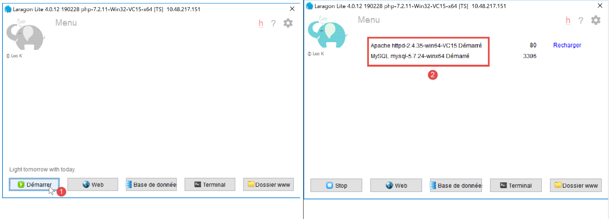
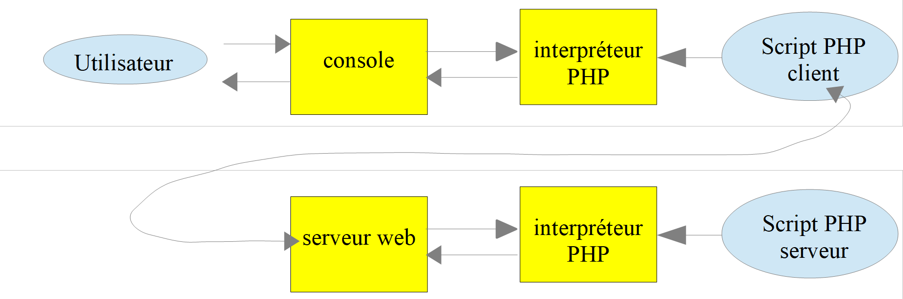
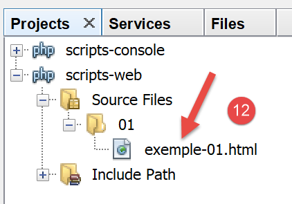
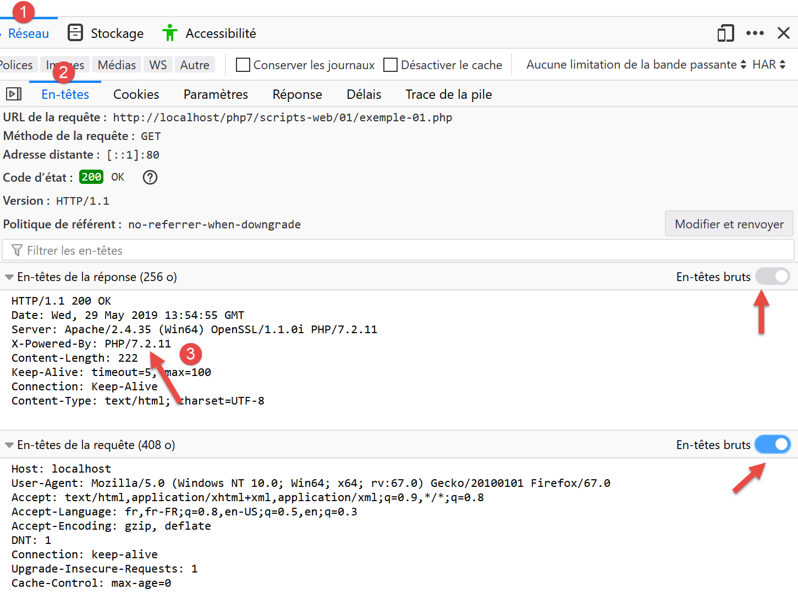
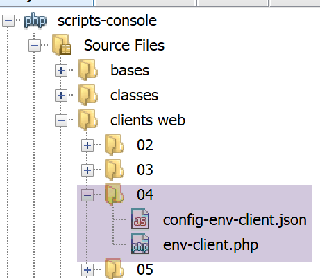
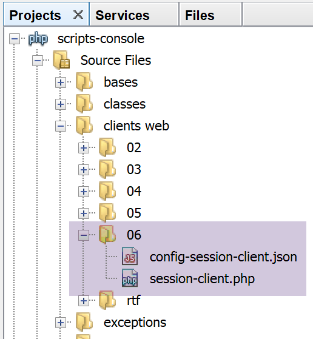

17. Web 服务
注：此处所说的“Web 服务”，是指任何向客户端（在后续示例中为控制台脚本）提供原始数据的 Web 应用程序。我们并不关注任何特定的技术——例如 REST（表征状态转移）或 SOAP（简单对象访问协议）——这些技术以明确定义的格式提供或多或少的原始数据。 REST 返回 JSON，而 SOAP 返回 XML。这些技术各自精确定义了客户端必须如何向服务器发起请求，以及服务器响应必须采用的格式。在本课程中，我们将对客户端请求和服务器响应的性质采取更灵活的态度。不过，所编写的脚本和使用的工具与 REST 技术类似。
17.1. 简介
由于 PHP 程序可由 Web 服务器执行，此类程序便成为能够为多个客户端提供服务的服务器端程序。从客户端的角度来看，调用 Web 服务即相当于请求该服务的 URL。客户端可以使用任何语言编写，包括 PHP。在后一种情况下，我们将使用刚才介绍过的网络函数。 我们还需要了解如何与 Web 服务“通信”，即理解 Web 服务器与其客户端之间通信所使用的 HTTP 协议。这正是“链接”一节的宗旨。
“链接”一节中描述的 Web 客户端让我们得以探索 HTTP 协议的一部分。

在最简单的形式下，客户端与服务端之间的交互过程如下：
- 客户端向 Web 服务器的 80 端口建立连接；
- 它请求一个文档；
- Web 服务器发送所请求的文档并关闭连接；
- 随后客户端关闭连接；
文档可以是多种类型：HTML格式的文本、图片、视频……它可以是现成的文档（静态文档），也可以是由脚本即时生成的文档（动态文档）。在后一种情况下，我们称之为Web编程。用于动态生成文档的脚本可以使用多种语言编写：PHP、Python、Perl、Java、Ruby、C#、VB.NET……
下文中，我们将使用 PHP 脚本动态生成文本文档。

- 在[1]中，客户端与服务器建立连接，请求一个PHP脚本，并可能向该脚本发送参数，也可能不发送；
- 在[2]中，Web服务器使用PHP解释器执行该PHP脚本。脚本生成一个文档并将其发送给客户端[3]；
- 服务器关闭连接。客户端也执行同样的操作；
Web 服务器可以同时处理多个客户端。
在 [Laragon] 软件包中，Web 服务器采用 Apache 服务器，这是 Apache 基金会（http://www.apache.org/）提供的一款开源服务器。在以下应用场景中，必须启动 [Laragon]：

这将启动 Apache Web 服务器以及 MySQL 数据库管理系统。
Web 服务器执行的脚本将使用 NetBeans 工具编写。到目前为止，我们编写的是在控制台环境中执行的 PHP 脚本：

用户通过控制台请求执行 PHP 脚本并接收结果。
在接下来的客户端/服务器应用程序中：
- 客户端脚本在控制台环境中执行；
- 服务器脚本在 Web 环境中执行；

服务器端的 PHP 脚本不能随意放置在文件系统的任意位置。实际上，Web 服务器会根据配置中指定的位置来查找用户请求的静态和动态文档。 Laragon 的默认配置会将文档搜索范围限定在 <Laragon>/www 文件夹内，其中 <Laragon> 代表 Laragon 的安装目录（ ）。因此，如果 Web 客户端通过 URL [http://localhost/D] 请求文档 D，Web 服务器将返回位于路径 [<Laragon>/www/D] 下的文档 D。
在以下示例中，我们将服务器脚本放置在 [www/php7/scripts-web] 文件夹中。如果某个服务器脚本命名为 S.php，则将通过 URL [http://localhost/php7/scripts-web/S.php] 向 Web 服务器请求该脚本。随后，系统将返回文档 [<Laragon>/www/php7/scripts-web/S.php]。

- 在 [1] 中，是 [<laragon>/www] 文件夹；
- 在 [2] 中，是 [php7/scripts-web] 文件夹；
要使用 NetBeans 创建服务器脚本，我们将按以下步骤进行：

- 在 [1-2] 中，我们创建一个新项目
- 在 [3-4] 中，选择 [PHP] 类别和 [PHP 应用程序] 项目

- 在 [5] 中，输入项目名称；
- 在 [6] 中，指定文件系统中的项目文件夹。请注意，此处位于 [<laragon>/www] 文件夹中，位置正确；
- 在 [7-8] 中，接受默认值；
- 在 [9-10] 中，接受提供的默认值。在 [10] 中，请注意我们将放置在此项目中的脚本的 URL 将以路径 [http://localhost/php7/scripts-web/] 开头；

- 在 [11] 中，系统向您提供了基于 PHP 编写的 Web 框架。一旦 Web 应用程序规模扩大，这些框架就必不可少；
- 在 [12] 中，您可以使用 [Composer] 工具添加 PHP 库。我们在 Laragon [终端] 窗口中使用过两次该工具：
- 安装 [SwiftMailer] 库，该库支持发送电子邮件；
- 安装 [php-mime-mail-parser] 库，该库可用于读取电子邮件；
- 在[13]中，一旦项目创建向导确认完成，该项目便会出现在[13]的“项目”选项卡中；
17.2. 编写静态页面
注意：在本指南的后续部分中，[Laragon] 必须处于运行状态。
我们将演示如何使用 NetBeans 创建静态 HTML（超文本标记语言）页面：

- 在[1-5]中，我们创建了一个名为[01]的文件夹；


- 在 [6-12] 中，我们创建了一个名为 [example-01.html] 的 HTML 文件；
[example-01.html] 文件生成时包含以下预填充内容（2019年5月）：
<!DOCTYPE html>
<!--
To change this license header, choose License Headers in Project Properties.
To change this template file, choose Tools | Templates
and open the template in the editor.
-->
<html>
<head>
<title>TODO supply a title</title>
<meta charset="UTF-8">
<meta name="viewport" content="width=device-width, initial-scale=1.0">
</head>
<body>
<div>TODO write content</div>
</body>
</html>
让我们将其内容更新如下：
<!DOCTYPE html>
<html>
<head>
<title>PHP7 par l'exemple</title>
<meta charset="UTF-8">
<meta name="viewport" content="width=device-width, initial-scale=1.0">
</head>
<body>
<div><b>Ceci est un exemple de page statique</b></div>
</body>
</html>
我们更改了页面标题（第 4 行）及其内容（第 9 行）。
现在让我们让 Laragon 的 Apache 服务器显示这个 HTML 页面：

- 在[1-2]中，我们让 Laragon Apache 服务器显示该页面；
- 在 [3] 中，显示页面的 URL；
- 在 [4] 中，是我们修改过的标题；
- 在 [5] 中，是我们修改后的内容；
显示的页面是一个静态页面：您可以在浏览器中随意刷新（按 F5 键），显示的内容始终保持不变。
大多数浏览器都提供了访问客户端与服务器之间交换数据的途径，具体方法如“链接”一节所述。在 Firefox 浏览器中（截至 2019 年 5 月），按 F12 键即可访问这些数据：

如[1]中所述，让我们刷新页面（F5）：

- 在[2]中，浏览器加载的文档：我们选中它；

- 在[5]中，选中待分析的文档；
- 在 [3-4] 中，我们请求查看客户端/服务器交互；
- 在 [6] 中，显示这些交互；

- 在 [7] 中，选择“标头”选项卡；
- 在[8]中，浏览器请求的URL；
- 在 [9] 中，发送到服务器的命令是 [GET http://localhost/php7/scripts-web/01/exemple-01.html HTTP/1.1]；
- 在 [10] 中，浏览器（客户端）随后发送的 HTTP 头部；
- 在 [11] 中，是服务器响应的 HTTP 头部；

- 在 [12-14] 中，是 HTTP 头部之后发送的服务器响应；
- 在 [14] 中，我们可以看到客户端浏览器已收到我们构建的 HTML 页面。随后，它解析了该代码并显示如下内容：

17.3. 使用 PHP 创建动态页面
现在我们将用 PHP 编写一个动态页面：


- 在 [1-8] 中，我们创建了一个页面 [example-01.php]；
[example-01.php] 文件生成时已预填充如下内容（2019年5月）：
<!DOCTYPE html>
<!--
To change this license header, choose License Headers in Project Properties.
To change this template file, choose Tools | Templates
and open the template in the editor.
-->
<html>
<head>
<meta charset="UTF-8">
<title></title>
</head>
<body>
<?php
// put your code here
?>
</body>
</html>
我们将上述代码修改如下：
<!DOCTYPE html>
<html>
<head>
<meta charset="UTF-8">
<title>Exemple de page dynamique</title>
</head>
<body>
<?php
// time : nb de millisecondes entre le moment présent et le 01/01/1970
// format affichage date-heure
// d : jour sur 2 chiffres
// m : mois sur 2 chiffres
// y : année sur 2 chiffres
// H : heure 0,23
// I : minutes
// s: secondes
print "<b>Date et heure du jour : </b>" . date("d/m/y H:i:s", time());
?>
</body>
</html>
评论
- 第 5 行：我们更改了页面标题；
- 第17行：打印当前日期和时间；
基本上，上面的 PHP 脚本会将当前时间打印到控制台。然而，当由 Web 服务器执行时，[print] 语句的输出——通常会导向脚本的执行控制台——会被重定向到连接服务器与客户端的通道中。因此，在 Web 环境中，上面的脚本会将当前时间作为文本发送给客户端，在本例中即浏览器。
让我们运行 [example-01.php] 脚本：

- 在 [3] 中，是从 Apache Web 服务器请求的 URL；
- 在 [4] 中，是我们修改过的页面标题；
- 在 [5] 中，是 [print] 语句生成的内容；
这是一个动态页面，因为如果你在浏览器中多次刷新页面（按 F5 键），其内容会发生变化（时间会更新）。
浏览器已接收到了一个 HTML 数据流。要查看它，您需要在浏览器中显示该页面的源代码：

- 要访问菜单 [1]，请在浏览器中右键单击页面；
- 在 [2] 中，页面的 URL [example-01.php] 需在前面添加前缀 [view-source:] [3]；
- 在 [4] 中，浏览器显示的 HTML 内容；
因此，必须牢记：旨在由 Web 服务器执行的 PHP 脚本必须生成 HTML 数据流。
现在让我们通过 F12 查看服务器发送给客户端浏览器的 HTTP 头部：

- 在 [3] 中，出现了一个在请求静态页面时不存在的 HTTP 头。该头表明服务器的响应是由 PHP 脚本生成的；
我们已经看到，服务器的响应（此处的HTML输出）可以由PHP脚本生成。该脚本还可以生成HTTP头以及服务器响应中的几乎所有元素。
17.4. HTML 基础
本章不会深入探讨 PHP 网页编程。相关章节中已介绍了 MVC Web 应用程序的开发。本章主要关注 Web 服务：即通过 Web 服务器向其他 PHP 客户端提供数据的 PHP 页面。尽管如此，我们认为向读者介绍一些 HTML 基础知识仍会有所帮助。
Web 浏览器可以显示各种文档，其中最常见的是 HTML（超文本标记语言）文档。这些文档由采用 <tag>text</tag> 形式的标签进行格式化的文本组成。因此，文本 <b>important</b> 将以粗体显示“important”一词。还有一些独立标签，例如 <hr/> 标签，它会显示一条水平线。我们不会逐一讲解 HTML 文本中可能出现的所有标签。 有许多所见即所得（WYSIWYG）软件，允许您无需编写任何 HTML 代码即可构建网页。这些工具会自动为使用鼠标和预定义控件创建的布局生成 HTML 代码。因此，您可以（使用鼠标）将表格插入页面，然后查看软件生成的 HTML 代码，从而了解在网页上定义表格应使用的标签。就是这么简单。 此外，掌握 HTML 知识至关重要，因为动态 Web 应用程序必须自行生成 HTML 代码并发送给 Web 客户端。该代码是通过编程方式生成的，而您当然必须清楚该生成什么内容，才能确保客户端收到他们想要的网页。
简而言之，您无需精通整个HTML语言即可开始进行网页编程。不过，这些知识是必要的，并且可以通过使用DreamWeaver等所见即所得（WYSIWYG）网页编辑器来掌握。探索HTML奥秘的另一种方法是浏览网页，查看那些包含您尚未接触过的有趣元素的页面源代码。
请看以下示例，其中列举了网页文档中常见的一些元素，例如：
- 表格；
- 图片；
- 一个链接。

HTML 文档通常具有以下形式：
<html> <head> <title>标题</title> ... </head> <body 属性> ... </body></html>
整个文档由 <html>…</html> 标签包围。它由两部分组成：
- <head>…</head>：这是文档中不可显示的部分。它向将显示该文档的浏览器提供信息。该部分通常包含 <title>…</title> 标签，用于设置浏览器标题栏中显示的文本。 该部分还可能包含其他标签，尤其是定义文档关键词的标签，这些关键词随后会被搜索引擎使用。该部分还可能包含脚本，通常采用 JavaScript 或 VBScript 编写，这些脚本将由浏览器执行。
- <body attributes>…</body>：这是浏览器将显示的部分。该部分包含的 HTML 标签向浏览器说明了文档的“预期”视觉布局。每个浏览器对这些标签的解释方式各不相同。因此，两个浏览器可能以不同的方式显示同一个网页文档。这通常是网页设计师面临的挑战之一。
本示例文档的 HTML 代码如下：
<!DOCTYPE html>
<html xmlns="http://www.w3.org/1999/xhtml">
<head>
<meta http-equiv="Content-Type" content="text/html; charset=utf-8" />
<title>Quelques balises HTML</title>
</head>
<body style="background-image: url(images/standard.jpg)">
<h1 style="text-align: left">Quelques balises HTML</h1>
<hr />
<table border="1">
<thead>
<tr>
<th>Colonne 1</th>
<th>Colonne 2</th>
<th>Colonne 3</th>
</tr>
</thead>
<tbody>
<tr>
<td>cellule(1,1)</td>
<td style="text-align: center;">cellule(1,2)</td>
<td>cellule(1,3)</td>
</tr>
<tr>
<td>cellule(2,1)</td>
<td>cellule(2,2)</td>
<td>cellule(2,3</td>
</tr>
</tbody>
</table>
<br/><br/>
<table border="0">
<tr>
<td>Une image</td>
<td>
<img border="0" src="images/cerisier.jpg"/></td>
</tr>
<tr>
<td>Le site de Polytech'Angers</td>
<td><a href="http://www.polytech-angers.fr/fr/index.html">ici</a></td>
</tr>
</table>
</body>
</html>
HTML 标签及示例 | |
<title>一些 HTML 标签</title> (第 5 行) 当文档显示时，文本 [一些 HTML 标签] 将出现在浏览器的标题栏中 | |
<hr />：显示一条水平线（第 10 行） | |
<table attributes>….</table>：用于定义表格（第 12、32 行） <thead>…</thead>：定义列标题（第13、19行） <tbody>…</tbody>：定义表格内容（第 20、31 行） <tr attributes>…</tr>：定义行（第 21、25 行） <td attributes>…</td>：用于定义单元格（第 22 行） 示例： <table border="1">…</table>：border 属性定义表格边框的粗细 <td style="text-align: center;">单元格(1,2)</td>（第23行）：定义一个内容为单元格(1,2)的单元格。该内容将水平居中（text-align: center）。 | |
<img border="0" src="images/cherrytree.jpg"/>（第 38 行）：定义了一张无边框（border="0"）的图片，其源文件位于 Web 服务器上的 [images/cherrytree.jpg]（src="images/cherrytree.jpg"）。 该链接位于可通过 URL http://localhost/php7/scripts-web/01/balises.html 访问的网页文档中。因此，浏览器将请求 URL http://localhost/php7/scripts-web/01/images/cerisier.jpg 以获取此处引用的图片。 | |
<a href="http://www.polytech-angers.fr/fr/index.html">here</a>（第 42 行）：使文本“here”作为指向 URL http://www.polytech-angers.fr/fr/index.html 的链接。 | |
<body style="background-image: url(images/standard.jpg)">（第8行）：表示用作页面背景的图片位于Web服务器上的URL [images/standard.jpg]。在本示例中，浏览器将请求URL http://localhost/php7/scripts-web/01/images/standard.jpg 以获取此背景图片。 |
在这个简单的示例中，我们可以看到，为了构建整个文档，浏览器必须向服务器发出三次请求：
- http://localhost/php7/scripts-web/01/images/balises.html 以获取文档的 HTML 源代码
- http://localhost/php7/scripts-web/01/images/cerisier.jpg 用于获取图片 cerisier.jpg
- http://localhost/php7/scripts-web/01/images/standard.jpg 用于获取背景图片 standard.jpg
这可以通过客户端与服务器之间的网络流量（在浏览器中按 F12）来查看：

- 在[3-5]中，我们可以看到浏览器发出的三个请求；
17.5. 将静态页面变为动态
让我们演示如何将 HTML 页面 [example-01.html] 变为动态页面。复制内容

我们将 [example-01.html] 的内容复制到了文件 [page-01.php] 中。如果运行 [2] 这个 Web 脚本，浏览器中会显示如下内容：

- 在 [3] 中，请求的 URL；
- 在 [4] 中，页面标题；
- 在 [5] 中，页面内容；
如果查看浏览器接收到的代码，我们会发现如下内容：

- 在 [7] 中，[example-01.php] 脚本中放置的 HTML 代码
PHP 解释器解析了 [page-01.php] 脚本，并生成了与静态页面 [example-01.html] 完全相同的 HTML 输出。在 [page-01.php] 脚本中，并没有 PHP 代码，只有 HTML。这告诉我们一个道理：当 PHP 解释器在 PHP 脚本中发现 HTML 时，它会保持原样，并将它原样发送给客户端。
现在，让我们在 [page-01.php] 脚本中添加一些 PHP 指令，以便 PHP 解释器有任务可执行：
<!DOCTYPE html>
<html>
<head>
<title><?php print $page->title ?></title>
<meta charset="UTF-8">
<meta name="viewport" content="width=device-width, initial-scale=1.0">
</head>
<body>
<div><b><?php print $page->contents ?></b></div>
</body>
</html>
在第 4 行和第 9 行，我们添加了 PHP 代码以动态生成页面标题和内容。这里，我们假设变量 [$page] 是一个包含待显示数据的对象。
如果运行这段新代码，浏览器中将显示以下结果：

- 在 [1] 中，是请求的 URL；
- 在 [2] 中，由于变量 [$page] 未定义，因此无法显示页面标题；
- 在 [3] 中，内容同样无法显示；
现在，让我们编写以下 Web 脚本 [example-02.php]：

脚本 [example-02.php] 内容如下：
<?php
// define the page elements to be displayed
$page=new \stdclass();
$page->title="Un nouveau titre";
$page->contents="Un nouveau contenu généré dynamiquement";
// display [page-01]
require_once "page-01.php";
- 第 4-6 行：我们定义了 [$page] 对象；
- 第 8 行：包含脚本 [page-01.php]。随后将解析该脚本中的代码：
- 变量 [$page] 现已定义，PHP 解释器将使用它；
- 来自 [page-01.php] 的 HTML 代码将原样发送给客户端；
- PHP [print] 操作的结果将被包含在发送给客户端的文本流中；
现在，如果我们运行 Web 脚本 [example-02.php]，浏览器中将显示以下内容：

如果查看浏览器接收到的文本内容：

- 原先位于 [2] 和 [3] 中的 PHP 代码已被两个 [print] 命令的执行结果所替换；
从这个例子中，我们可以得出两个关键点：
- 面向浏览器的 HTML 页面可以被封装在仅包含 HTML 代码和少量由 PHP 代码生成的动态部分的 PHP 脚本中。这些页面中的 PHP 代码应尽可能少；
- 所有用于生成 HTML 页面中动态数据的逻辑，都必须封装在纯 PHP 脚本中，且这些脚本不应包含任何页面呈现代码（HTML、CSS、JavaScript 等）；
这使得任务分离成为可能：
- 创建待显示网页的任务（HTML、CSS、JavaScript 等）；
- 我们正在构建的 Web 应用程序逻辑的任务。该逻辑可以采用三层架构来实现，这与我们处理控制台脚本时完全一致；
接下来，我们将构建具体的 Web 脚本；
- 这些脚本仅向客户端发送数据，而不包含任何呈现元素（HTML、CSS、JavaScript）。因此，它们将作为数据服务器而非网页存在；
- 这些 Web 脚本的客户端将是控制台脚本，它们将检索服务器发送的数据并进行处理；
17.6. 客户端/服务器日期/时间应用程序
目前我们的配置如下：

我们将编写：
- 一个 Web 脚本 [1]，用于将当前日期和时间发送给客户端；
- 一个控制台脚本 [2]，它将作为 Web 脚本的客户端：它将接收 Web 脚本发送的日期和时间，并在控制台显示出来；

- 在 [1] 中，即 Web 脚本 [date-time-server.php]；
- 在 [2] 中，控制台脚本 [date-time-client]，它是 Web 脚本的客户端；
17.6.1. 服务器脚本
我们在前面的章节中已经编写了一个生成当前日期和时间的 Web 脚本。该脚本如下所示 [example-01.php]：
<!DOCTYPE html>
<html>
<head>
<meta charset="UTF-8">
<title>Exemple de page dynamique</title>
</head>
<body>
<?php
// time : nb de millisecondes depuis 01/01/1970
// format affichage date-heure
// d: jour sur 2 chiffres
// m: mois sur 2 chiffres
// y : année sur 2 chiffres
// H : heure 0,23
// i : minutes
// s: secondes
print "<b>Date et heure du jour : </b>" . date("d/m/y H:i:s", time());
?>
</body>
</html>
我们说过要编写数据服务器：不带 HTML 标记的原始数据。那么服务器脚本 [date-time-server.php] 将如下所示：
<?php
// set header HTP [Content-Type]
header('Content-Type: text/plain; charset=UTF-8');
//
// send date and time
// time: number of milliseconds since 01/01/1970
// date-time display format
// d: 2-digit day
// m: 2-digit month
// y: 2-digit year
// H: hour 0.23
// i : minutes
// s: seconds
print date("d/m/y H:i:s", time());
- 第 4 行：我们设置了 HTTP 头部 [Content-Type]，用于告知客户端将接收的文档类型。此前，[Content-Type] 的设置为：[Content-Type: text/html; charset=UTF-8]。 在此，我们告知客户端该文档是不含 HTML 标记的纯文本。这对我们的控制台客户端并不重要，因为它不会使用此标头。但对浏览器客户端而言则更为重要，因为它们确实会使用此标头；
让我们运行这个服务器端脚本：

如果我们在浏览器中检查服务器的响应（F12），可以看到在[5]处是服务器脚本设置的HTTP头部，而在[8]处则是接收到的文本文档；

17.6.2. 客户端脚本
在前一节中，我们开发了几个 HTTP 客户端。 我们可以利用它们来获取由服务器脚本 [date-time-server.php] 发送的文本文件。但我们不会这样做。正如我们处理 SMTP 和 IMAP 协议时所做的那样，我们将使用一个第三方库，即 Symfony 框架 [https://symfony.com/doc/master/components/http_client.html] 中的 [HttpClient] 组件。
与前两个库一样，我们使用 [Composer] 工具来安装 Symfony 的 [HttpClient] 组件。在 Laragon [终端] 窗口中（参见相关章节），输入以下命令：

- 在 [3] 中，请确认您当前位于 [<laragon>/www/] 目录下，其中 <laragon> 是 Laragon 的安装目录；
- 在 [4] 中，执行 [composer] 命令以安装 Symfony [HttpClient] 库；
- 在 [5] 中，由于该机器上已安装 [HttpClient] 库，因此未进行安装；
- 在 [6-7] 中，[<laragon>/www/vendor/symfony] 目录下会出现新的文件夹；
与 [5] 不同，您应该看到类似以下内容：
C:\myprograms\laragon-lite\www
? composer require symfony/http-client
Using version ^4.3 for symfony/http-client
./composer.json has been updated
Loading composer repositories with package information
Updating dependencies (including require-dev)
Package operations: 4 installs, 0 updates, 0 removals
- Installing symfony/polyfill-php73 (v1.11.0): Downloading (100%)
- Installing symfony/http-client-contracts (v1.1.1): Downloading (100%)
- Installing psr/log (1.1.0): Loading from cache
- Installing symfony/http-client (v4.3.0): Downloading (100%)
Writing lock file
Generating autoload files
请确保 [<laragon>/www/vendor] 文件夹已包含在项目的 [Include Path] 中（参见相关章节）：

完成此操作后，我们可以编写控制台脚本 [date-time-client.php]：

该控制台脚本 [date-time-client.php] 将使用以下 JSON 文件 [config-date-time-client.json]：
- 第 2 行：服务器脚本的 URL；
客户端脚本 [date-time-client.php] 将如下所示：
<?php
// service customer date / time
//
// error management
//ini_set("error_reporting", E_ALL & ~ E_WARNING & ~E_DEPRECATED & ~E_NOTICE);
//ini_set("display_errors", "off");
//
// dependencies
require_once 'C:/myprograms/laragon-lite/www/vendor/autoload.php';
use Symfony\Component\HttpClient\HttpClient;
// customer configuration
const CONFIG_FILE_NAME = "config-date-time-client.json";
// we retrieve the configuration
if (!file_exists(CONFIG_FILE_NAME)) {
print "Le fichier de configuration [" . CONFIG_FILE_NAME . "] n'existe pas\n";
exit;
}
if (!$config = \json_decode(\file_get_contents(CONFIG_FILE_NAME), true)) {
print "Erreur lors de l'exploitation du fichier de configuration jSON [" . CONFIG_FILE_NAME . "]\n";
exit;
}
// create a HTTP customer
$httpClient = HttpClient::create();
try {
// query
$response = $httpClient->request('GET', $config['url']);
// answer status
$statusCode = $response->getStatusCode();
print "---Réponse avec statut : $statusCode\n";
// we retrieve the headers
print "---Entêtes de la réponse\n";
$headers = $response->getHeaders();
foreach ($headers as $type => $value) {
print "$type: " . $value[0] . "\n";
}
// retrieve the body of the reply
$content = $response->getContent();
// we display it
print "---Réponse du serveur : [$content]\n";
} catch (TypeError | RuntimeException $ex) {
// error is displayed
print "Erreur de communication avec le serveur : " . $ex->getMessage() . "\n";
exit;
}
注释
- 第 10 行：与之前处理库的方式一样，我们加载文件 [<laragon>/www/vendor/autoload.php]；
- 第 11 行：声明我们将要使用的 [HttpClient] 类；
- 第 13–24 行：从 [$config] 字典中获取脚本的配置；
- 第 27 行：创建一个 [HttpClient] 类型的对象；
- 第 31 行：使用 GET 请求 [GET URL HTTP/1.1] 向服务器脚本发送请求。此操作为异步操作。程序执行将直接跳至第 33 行，无需等待响应；
- 第 33 行：获取响应状态。该状态位于服务器返回的第一个 HTTP 头中。因此，如果该头为 [HTTP/1.1 200 OK]，则响应状态为 200。此操作是阻塞的：只有当客户端从服务器接收到了完整的响应后，执行才会继续；
- 第 37 行：请求响应的 HTTP 头部；
- 第 42 行：获取服务器返回的文档：我们知道该文档是文本。
- 第 45–49 行：若发生错误，则显示错误信息；
当客户端脚本执行时（必须运行 Laragon 才能访问服务器脚本），控制台将显示以下结果：
---Réponse avec statut : 200
---Entêtes de la réponse
date: Thu, 30 May 2019 14:42:03 GMT
server: Apache/2.4.35 (Win64) OpenSSL/1.1.0i PHP/7.2.11
x-powered-by: PHP/7.2.11
content-length: 17
content-type: text/plain; charset=UTF-8
---Réponse du serveur : [30/05/19 14:42:03]
我们在第 8 行成功获取了当前日期和时间。
您可能想知道客户端脚本向服务器发送了什么。为此，我们将使用我们的通用 TCP 服务器（参见“链接”部分）：

- 位于 [1] 中的 utilities 文件夹内；
- 在[2]中，TCP服务器正在100端口上运行；
- 在[3]中，正在等待通过键盘输入的命令；
我们修改脚本的配置文件 [date-time-client.php]：
{
"url": "http://localhost:100/php7/scripts-web/02/date-time-server.php"
}
这次，客户端通过 100 端口联系服务器 [localhost]。因此，我们的通用 TCP 服务器将被调用。当我们运行控制台脚本 [date-time-client.php] 时，通用 TCP 服务器的控制台会发生如下变化：

- 在 [3] 中，客户端脚本构建的 HTTP GET 请求；
- 在 [4] 中，是控制台脚本的签名；
- 在 [5] 中，服务器对客户端脚本的响应。请注意，这不是一个有效的 HTTP 响应：
- 应包含 HTTP 头部；
- 随后应有一行空行；
- 然后是发送给客户端的文本文件；
- 在 [6] 中，我们关闭与客户端脚本的连接，以便它检测到已收到完整的响应；
在客户端脚本中，控制台显示如下内容：

- 在 [7] 中，Symfony 客户端接收到的内容；
17.6.3. 服务器脚本 – 版本 2
默认情况下，用于编写 Web 脚本的 PHP 函数并非面向对象的。因此，在服务器端，我们不得不混合使用传统的 PHP 类和函数。为了实现更一致的编码风格，我们将使用 Symfony 框架中的 [HttpFoundation] 库。它将 Web 服务所需的所有传统 PHP 函数封装成一个由类和接口组成的系统。 该库的文档可访问 [https://symfony.com/doc/current/components/http_foundation.html]（2019年5月）。
要在 Laragon 终端中安装该库，请按照以下步骤操作（参见相关章节）：

- [2-3]：确保您位于 [<laragon>/www] 文件夹中；
- [4]: 运行 [composer] 命令，这将安装 [HttpFoundation] 库；
- [5]: 在此示例中，该库已安装；
首次安装时，您应看到类似以下的控制台日志：
C:\myprograms\laragon-lite\www
? composer require symfony/http-foundation
Using version ^4.3 for symfony/http-foundation
./composer.json has been updated
Loading composer repositories with package information
Updating dependencies (including require-dev)
Package operations: 2 installs, 0 updates, 0 removals
- Installing symfony/mime (v4.3.0): Downloading (100%)
- Installing symfony/http-foundation (v4.3.0): Downloading (100%)
Writing lock file
Generating autoload files
Web 服务器的第二个版本 [date-time-server-2.php] 如下：
<?php
// using Symfony libraries
// dependencies
require_once 'C:/myprograms/laragon-lite/www/vendor/autoload.php';
use Symfony\Component\HttpFoundation\Response;
// we set the Content-Type header
$response=new Response();
$response->headers->set("content-type","text/plain");
$response->setCharset("utf-8");
// set the content of the response
//
// send date and time
// time: number of milliseconds since 01/01/1970
// date-time display format
// d: 2-digit day
// m: 2-digit month
// y: 2-digit year
// H: hour 0.23
// i : minutes
// s: seconds
$response->setContent(date("d/m/y H:i:s", time()));
// we send the answer
$response->send();
评论
- 第 7 行：来自 Symfony [HttpFoundation] 库的 [Response] 类负责处理对 Web 服务客户端的全部响应；
- 第 10 行：创建 [Response] 类的实例；
- 第 11 行：指定响应类型为 [text/plain]；
- 第 12 行：响应内容为 UTF-8 编码的文本；
- 第 25 行：将响应正文设置为客户端请求的内容；
- 第 28 行：将响应发送给客户端；
17.6.4. 客户端脚本 – 版本 2
客户端脚本保持不变。我们仅修改其配置文件 [config-date-time-client.json]：
结果与第 1 版相同。
17.7. JSON 数据服务器
Web脚本的响应可以包含多个数据点，这些数据点可以组织成数组和对象。然后，脚本可以将这些各种元素封装在一个JSON字符串中发送，客户端将对其进行解码。

17.7.1. 服务器脚本
[json-server.php] 脚本使用了以下 [Person] 类：
<?php
namespace Modèles;
class Personne implements \JsonSerializable {
// attributes
private $nom;
private $prénom;
private $âge;
// convert associative array to object [Person]
public function setFromArray(array $assoc): Personne {
// initialize the current object with the associative array
foreach ($assoc as $attribute => $value) {
$this->$attribute = $value;
}
// result
return $this;
}
// getters and setters
public function getNom() {
return $this->nom;
}
public function getPrénom() {
return $this->prénom;
}
public function setNom($nom) {
$this->nom = $nom;
return $this;
}
public function setPrénom($prénom) {
$this->prénom = $prénom;
return $this;
}
public function getÂge() {
return $this->âge;
}
public function setÂge($âge) {
$this->âge = $âge;
return $this;
}
// toString
public function __toString(): string {
return "Personne [$this->prénom, $this->nom, $this->âge]";
}
// implements the JsonSerializable interface
public function jsonSerialize(): array {
// render an associative array with the object's attributes as keys
// this table can then be encoded as jSON
return get_object_vars($this);
}
// convert a jSON to a [Person] object
public static function jsonUnserialize(string $json): Personne {
// we create a person from the string jSON
return (new Personne())->setFromArray(json_decode($json, true));
}
}
评论
- 第 5 行：该类实现了 PHP 的 [JsonSerializable] 接口。这要求它在第 55–59 行中实现 [jsonSerialize] 方法。 该方法必须返回一个关联数组，该数组将被序列化为 JSON。在使用表达式 [json_encode($person)] 时，[json_encode] 函数会检查 [Person] 类是否实现了 [JsonSerializable] 接口。如果是，则该表达式变为 [json_encode($person→serialize())]；
- 第 12–19 行：该类没有构造函数，但有一个初始化器。因此，可以使用表达式 [(new Person()) → setFromArray($array)] 来实例化 [Person] 类。初始化器可以有多种类型，而构造函数只能有一个。这些初始化器允许采用 [(new Person())→initializer(…)) 形式的各种实例化模式；
- 第 62–65 行：静态函数 [jsonUnserialize] 允许您根据其 JSON 字符串创建 [Person] 对象；
[json-server.php] 脚本如下：
<?php
// dependencies
require_once __DIR__ . "/Personne.php";
use \Modèles\Personne;
require_once 'C:/myprograms/laragon-lite/www/vendor/autoload.php';
use \Symfony\Component\HttpFoundation\Response;
// set the Content-Type header and the character library used
$response = new Response();
$response->headers->set("content-type", "application/json");
$response->setCharset("utf-8");
// create a Person object
$personne = (new Personne())->setFromArray([
"nom" => "de la Hûche",
"prénom" => "jean-paul",
"âge" => 27]);
// an associative table
$assoc = ["attr1" => "value1",
"attr2" => [
"prenom" => "Jean-Paul",
"nom" => "de la Hûche"
]
];
// the content of the response is jSON
$response->setContent(json_encode([$personne, $assoc]));
// reply sent
$response->send();
评论
- 第 4-5 行：导入 [Person] 类；
- 第 11 行：我们指定文档类型为 [application/json]。浏览器接收到此标头后，将以格式化的 JSON 字符串形式显示内容，而非纯文本；
- 第 12 行：JSON 字符串将包含 UTF-8 字符；
- 第 15-18 行：创建一个 [Person] 对象；
- 第 20–25 行：创建了一个两级关联数组；
- 第 27 行：我们将数组的 JSON 字符串发送给客户端：
- [$person] 元素将通过其 [jsonSerialize] 方法序列化为 JSON；
- [$assoc] 元素将以原生方式序列化为 JSON；
如果运行此服务器端脚本（需确保 Laragon 正在运行），浏览器中将显示以下响应：


评论
- 在 [2] 中，格式化的 JSON 响应；
- 在 [4] 中，原始的 JSON 响应。请注意带重音字符的编码；
- 在[6]中，正是服务器发送的内容类型[application/json]导致浏览器以这种方式格式化输出；
17.7.2. 客户端

客户端 [json-client.php] 由以下 JSON 文件 [config-json-client.json] 进行配置：
脚本 [json-client.php] 如下：
<?php
// service customer jSON
//
// error management
//ini_set("error_reporting", E_ALL & ~ E_WARNING & ~E_DEPRECATED & ~E_NOTICE);
//ini_set("display_errors", "off");
//
// dependencies
require_once 'C:/myprograms/laragon-lite/www/vendor/autoload.php';
use Symfony\Component\HttpClient\HttpClient;
require_once __DIR__ . "/Personne.php";
use \Modèles\Personne;
// customer configuration
const CONFIG_FILE_NAME = "config-json-client.json";
// we retrieve the configuration
if (!file_exists(CONFIG_FILE_NAME)) {
print "Le fichier de configuration [" . CONFIG_FILE_NAME . "] n'existe pas\n";
exit;
}
if (!$config = \json_decode(\file_get_contents(CONFIG_FILE_NAME), true)) {
print "Erreur lors de l'exploitation du fichier de configuration jSON [" . CONFIG_FILE_NAME . "]\n";
exit;
}
// create a HTTP customer
$httpClient = HttpClient::create();
try {
// query
$response = $httpClient->request('GET', $config['url']);
// answer status
$statusCode = $response->getStatusCode();
print "---Réponse avec statut : $statusCode\n";
// we retrieve the headers
print "---Entêtes de la réponse\n";
$headers = $response->getHeaders();
foreach ($headers as $type => $value) {
print "$type: " . $value[0] . "\n";
}
// retrieve the jSON body of the response
list($personne, $assoc) = json_decode($response->getContent(), true);
// a person is instantiated from an array of attributes
$personne = (new Personne())->setFromArray($personne);
// server response is displayed
print "---Réponse du serveur\n";
print "$personne\n";
print "tableau=" . json_encode($assoc, JSON_UNESCAPED_UNICODE) . "\n";
} catch (TypeError | RuntimeException $ex) {
// error is displayed
print "Erreur de communication avec le serveur : " . $ex->getMessage() . "\n";
}
评论
- 第 12-13 行：导入 [Person] 类；
- 第 30 行：创建 HTTP 客户端；
- 第 44 行：解码服务器发送的 JSON 字符串。我们知道，被编码的内容是一个包含两个关联数组的二元数组；
- 第 46 行：创建一个 [Person] 对象，以便在第 49 行显示它；
- 第 50 行：显示第二个关联数组。由于 [print] 语句无法直接显示数组，因此我们将该数组转换为 JSON 字符串。为正确显示带重音的字符，必须将第二个参数设置为 [JSON_UNESCAPED_UNICODE]。我们可以看到，带重音的字符确实已编码在 JSON 字符串中；
执行客户端脚本后，结果如下：
---Réponse avec statut : 200
---Entêtes de la réponse
date: Sun, 02 Jun 2019 09:56:29 GMT
server: Apache/2.4.35 (Win64) OpenSSL/1.1.0i PHP/7.2.11
x-powered-by: PHP/7.2.11
cache-control: no-cache, private
content-length: 143
connection: close
content-type: application/json
---Réponse du serveur
Personne [jean-paul, de la Hûche, 27]
tableau={"attr1":"value1","attr2":{"prenom":"Jean-Paul","nom":"de la Hûche"}}
第11行和第12行：带重音的字符已正确检索。
17.8. 检索 Web 服务环境变量
服务器脚本运行于其可访问的 Web 环境中。该环境存储在 $_SERVER 字典中，这是一个 PHP 全局变量。若使用 [HttpFoundation] 库，该环境位于 [Request→server] 字段中，其中 [Request] 指由 Web 脚本处理的 HTTP 请求。
17.8.1. 服务器脚本
我们正在编写一个服务器应用程序，该程序会将其执行环境发送给客户端。

Web脚本 [env-server.php] 如下所示：
<?php
// dependencies
require_once 'C:/myprograms/laragon-lite/www/vendor/autoload.php';
use \Symfony\Component\HttpFoundation\Response;
use Symfony\Component\HttpFoundation\Request;
// we retrieve the request
$request = Request::createFromGlobals();
// we work out the answer
$response = new Response();
// response content is json utf-8
$response->headers->set("content-type", "application/json");
$response->setCharset("utf-8");
// set the jSON content of the response
$response->setContent(json_encode($request->server->all()));
// reply sent
$response->send();
- 第 9 行：我们获取 [Request] 对象，该对象封装了 Web 脚本接收到的 HTTP 请求的所有可用信息及其执行环境；
- 第 13–14 行：我们将包含 UTF-8 字符的纯文本发送给客户端；
- 第 16 行：发送给客户端的信息将是一个字符串，该字符串由 [$request→server→all()] 对象经 JSON 序列化后获得：[$request→server] 代表 Web 脚本的执行环境。它是一个 [ServerBag] 类型的对象，属于字典的一种。[$request→server→all()] 是一个真正的字典，包含 [ServerBag] 的内容；
- 第 18 行：发送信息；
如果从 NetBeans 运行此脚本，浏览器将显示以下页面：

- 在 [2] 中，环境字典的各个键；
- 在 [3] 中，这些键的值；
17.8.2. 客户端脚本

客户端脚本 [env-client.php] 由以下 JSON 文件 [config-env-client.json] 进行配置：
客户端脚本 [env-client.php] 如下：
<?php
// server script environment
//
// error management
//ini_set("error_reporting", E_ALL & ~ E_WARNING & ~E_DEPRECATED & ~E_NOTICE);
//ini_set("display_errors", "off");
//
// dependencies
require_once 'C:/myprograms/laragon-lite/www/vendor/autoload.php';
use Symfony\Component\HttpClient\HttpClient;
// customer configuration
const CONFIG_FILE_NAME = "config-env-client.json";
// we retrieve the configuration
if (!file_exists(CONFIG_FILE_NAME)) {
print "Le fichier de configuration [" . CONFIG_FILE_NAME . "] n'existe pas\n";
exit;
}
if (!$config = \json_decode(\file_get_contents(CONFIG_FILE_NAME), true)) {
print "Erreur lors de l'exploitation du fichier de configuration jSON [" . CONFIG_FILE_NAME . "]\n";
exit;
}
// create a HTTP customer
$httpClient = HttpClient::create();
try {
// make a request to the server
$response = $httpClient->request('GET', $config['url']);
// answer status
$statusCode = $response->getStatusCode();
print "---Réponse avec statut : $statusCode\n";
// we retrieve the headers
print "---Entêtes de la réponse\n";
$headers = $response->getHeaders();
foreach ($headers as $type => $value) {
print "$type: " . $value[0] . "\n";
}
// server response is displayed
print "---Réponse du serveur\n";
$env = json_decode($response->getContent());
foreach ($env as $key => $value) {
print "[$key]=>$value\n";
}
} catch (TypeError | RuntimeException $ex) {
// error is displayed
print "Erreur de communication avec le serveur : " . $ex->getMessage() . "\n";
}
注释
- 第 42 行：反序列化来自服务器的 JSON 响应。这会返回一个哈希；
- 第43–45行：显示该关联数组中的所有值；
得到以下控制台输出：
---Réponse avec statut : 200
---Entêtes de la réponse
date: Sun, 02 Jun 2019 17:35:50 GMT
server: Apache/2.4.35 (Win64) OpenSSL/1.1.0i PHP/7.2.11
x-powered-by: PHP/7.2.11
cache-control: no-cache, private
content-length: 1505
connection: close
content-type: application/json
---Réponse du serveur
[HTTP_HOST]=>localhost
[HTTP_USER_AGENT]=>Symfony HttpClient/Curl
[HTTP_ACCEPT_ENCODING]=>deflate, gzip
[PATH]=>C:\Program Files (x86)\Mail Enable\BIN;C:\windows\system32;C:\windows;C:\windows\System32\Wbem;C:\windows\System32\WindowsPowerShell\v1.0\;C:\windows\System32\OpenSSH\;C:\Program Files\dotnet\;C:\Program Files\Microsoft SQL Server\130\Tools\Binn\;C:\Program Files (x86)\Mail Enable\BIN64;C:\Users\serge\AppData\Local\Microsoft\WindowsApps;;C:\myprograms\Microsoft VS Code\bin
[SystemRoot]=>C:\windows
[COMSPEC]=>C:\windows\system32\cmd.exe
[PATHEXT]=>.COM;.EXE;.BAT;.CMD;.VBS;.VBE;.JS;.JSE;.WSF;.WSH;.MSC
[WINDIR]=>C:\windows
[SERVER_SIGNATURE]=>
[SERVER_SOFTWARE]=>Apache/2.4.35 (Win64) OpenSSL/1.1.0i PHP/7.2.11
[SERVER_NAME]=>localhost
[SERVER_ADDR]=>::1
[SERVER_PORT]=>80
[REMOTE_ADDR]=>::1
[DOCUMENT_ROOT]=>C:/myprograms/laragon-lite/www
[REQUEST_SCHEME]=>http
[CONTEXT_PREFIX]=>
[CONTEXT_DOCUMENT_ROOT]=>C:/myprograms/laragon-lite/www
[SERVER_ADMIN]=>admin@example.com
[SCRIPT_FILENAME]=>C:/myprograms/laragon-lite/www/php7/scripts-web/04/env-server.php
[REMOTE_PORT]=>63744
[GATEWAY_INTERFACE]=>CGI/1.1
[SERVER_PROTOCOL]=>HTTP/1.1
[REQUEST_METHOD]=>GET
[QUERY_STRING]=>
[REQUEST_URI]=>/php7/scripts-web/04/env-server.php
[SCRIPT_NAME]=>/php7/scripts-web/04/env-server.php
[PHP_SELF]=>/php7/scripts-web/04/env-server.php
[REQUEST_TIME_FLOAT]=>1559496950.644
[REQUEST_TIME]=>1559496950
以下是部分变量的含义（适用于 Windows。在 Linux 上，这些变量会有所不同）：
客户端发送的 HTTP 头部 [Host: xxx] 中的 xxx 值 | |
客户端发送的 HTTP 头部 [User_Agent: xxx] 中的值 xxx | |
客户端发送的 HTTP 标头 [Accept-Encoding: xxx] 中的值 xxx | |
服务器脚本运行所在机器上可执行文件的路径 | |
DOS命令提示符路径 | |
可执行文件扩展名 | |
Windows 安装文件夹 | |
Web 服务器签名。此处无内容。 | |
Web 服务器的类型 | |
Web 服务器主机的互联网名称 | |
Web 服务器的监听端口 | |
Web 服务器主机的 IP 地址，此处为 127.0.0.1 | |
客户端的 IP 地址。在此示例中，客户端与服务器位于同一台机器上。 | |
客户端的通信端口 | |
Web 服务器所提供文档的目录树根目录 | |
URL请求的TCP协议（http://localhost/php7/等） | |
Web 服务器管理员的电子邮件地址 | |
服务器脚本的完整路径 | |
客户端发起请求所使用的端口 | |
Web 服务器使用的 HTTP 协议版本 | |
客户端使用的 HTTP 方法。共有四种：GET、POST、PUT、DELETE | |
随 GET 请求发送的参数 /url?parameters | |
客户端请求的 URL。如果浏览器请求 URL http://machine[:port]/uri，则 REQUEST_URI 将为 uri | |
$_SERVER['SCRIPT_FILENAME'] = $_SERVER['DOCUMENT_ROOT'].$_SERVER['SCRIPT_NAME'] |
17.9. 服务器检索客户端发送的参数
17.9.1. 简介
在 HTTP 协议中，客户端有两种方法向 Web 服务器传递参数：
- 它以表单形式请求服务 URL
GET url?param1=val1¶m2=val2¶m3=val3… HTTP/1.0
其中有效值必须先进行编码，以便将某些保留字符替换为相应的十六进制值；
- 它以以下形式请求服务 URL：
POST url HTTP/1.0
然后，在发送到服务器的 HTTP 头部中，包含以下头部：
客户端发送的其余标头以空行结尾。随后，它可以以以下形式发送其数据：
其中有效值必须像 GET 方法一样预先进行编码。发送给服务器的字符数必须为 N，其中 N 是标头中声明的值
Web 服务中的 PHP 脚本用于检索客户端发送的先前 parami 参数，并从数组中获取其值：
- 对于 GET 请求，使用 $_GET["parami"]；
- 对于 POST 请求，则为 $_POST["parami"]；
这适用于基本的 PHP 函数。如果使用 [HttpFoundation] 库，这些参数将位于：
- 对于 GET 请求，位于 [Request]->query->get('parami')；
- [Request]->request->get('parami') 用于 POST 请求；
其中 [Request] 代表 Web 脚本接收到的请求的所有信息；
17.9.2. GET 客户端 – 版本 1

客户端脚本通过以下 JSON 文件 [config-parameters-client.json] 进行配置：
- 第 1 行：GET 客户端的目标 Web 脚本 URL；
- 第 2 行：POST 客户端的目标 Web 脚本 URL；
GET 客户端向服务器发送三个参数 [last_name, first_name, age]。客户端 [parameters-get-client.php] 如下所示：
<?php
// client GET of a web server
//
// error management
//ini_set("error_reporting", E_ALL & ~ E_WARNING & ~E_DEPRECATED & ~E_NOTICE);
//ini_set("display_errors", "off");
//
// dependencies
require_once 'C:/myprograms/laragon-lite/www/vendor/autoload.php';
use Symfony\Component\HttpClient\HttpClient;
// customer configuration
const CONFIG_FILE_NAME = "config-parameters-client.json";
// we retrieve the configuration
if (!file_exists(CONFIG_FILE_NAME)) {
print "Le fichier de configuration [" . CONFIG_FILE_NAME . "] n'existe pas\n";
exit;
}
if (!$config = \json_decode(\file_get_contents(CONFIG_FILE_NAME), true)) {
print "Erreur lors de l'exploitation du fichier de configuration jSON [" . CONFIG_FILE_NAME . "]\n";
exit;
}
// create a HTTP customer
$httpClient = HttpClient::create();
try {
// prepare the parameters
list($prenom, $nom, $age) = array("jean-paul", "de la hûche", 45);
// information is encoded
$parameters = "prenom=" . urlencode($prenom) .
"&nom=" . urlencode($nom) .
"&age=$age”;
// query
$response = $httpClient->request('GET', $config['url-get'] . "?$parameters");
// answer status
$statusCode = $response->getStatusCode();
print "---Réponse avec statut : $statusCode\n";
// we retrieve the headers
print "---Entêtes de la réponse\n";
$headers = $response->getHeaders();
foreach ($headers as $type => $value) {
print "$type: " . $value[0] . "\n";
}
// server response is displayed
print "---Réponse du serveur [" . $response->getContent() . "]\n";
} catch (TypeError | RuntimeException $ex) {
// error is displayed
print "Erreur de communication avec le serveur : " . $ex->getMessage() . "\n";
}
注释
- 第 33-35 行：将参数发送至服务器的编码处理。参数 [$first_name, $last_name] 可能包含 UTF-8 字符，因此使用 [urlencode] 函数进行编码。所有非字母数字字符（由关系表达式定义）均被替换为 %xx，其中 xx 是该字符的十六进制值。空格被替换为 + 号；
- 第 37 行：请求的 URL 为 $URL?$parameters，其中 $parameters 的格式为 name=val1&firstname=val2&age=val3；
- 第 48 行：客户端将直接显示服务器的响应；
您可能好奇在参数化 GET 请求过程中服务器会接收什么。为此，我们从 Laragon 终端（参见链接部分）在本地机器的 100 端口上启动通用服务器 [RawTcpServer]：

请确认在 [4] 中，您确实位于 utilities 文件夹内。
我们修改配置 GET 和 POST 客户端的 JSON 文件 [parameters-get-client.json]：
{
"url-get": "http://localhost:100/php7/scripts-web/05/parameters-server.php",
"url-post": "http://localhost/php7/scripts-web/05/parameters-server.php"
}
- 第 2 行：我们已更改了 Web 服务器的端口。因此，将联系 [RawTcpServer]；
我们运行客户端。在 [RawTcpServer] 窗口中，我们看到以下信息：

- 在 [1] 中，显示了客户端发送的 GET 请求。我们可以清楚地看到某些字符的编码；
17.9.3. GET / POST 服务器

服务器脚本 [parameters-server.php] 如下所示：
<?php
// dependencies
require_once 'C:/myprograms/laragon-lite/www/vendor/autoload.php';
use \Symfony\Component\HttpFoundation\Response;
use Symfony\Component\HttpFoundation\Request;
// we retrieve the request
$request = Request::createFromGlobals();
// retrieve query parameters
$getParameters = $request->query->all();
$bodyParameters = $request->request->all();
// we work out the answer
$response = new Response();
// the content of the answer is utf-8 text
$response->headers->set("content-type", "application/json");
$response->setCharset("utf-8");
// response content - an array encoded in jSON
$response->setContent(json_encode([
"method" => $request->getMethod(),
"uri" => $request->getRequestUri(),
"getParameters" => $getParameters,
"bodyParameters" => $bodyParameters
], JSON_UNESCAPED_UNICODE));
// reply sent
$response->send();
注释
- 第 9 行：为 Web 脚本创建 [Request] 对象。该对象封装了 Web 脚本从客户端接收到的所有信息；
- 第 11 行：[Request→query] 对象的类型为 [ParameterBag]，用于收集客户端发起的任何 GET 操作的参数。表达式 [Request→query→get("X")] 从 GET 参数 [name=val1&firstname=val2&age=val3] 中提取名为 X 的参数。表达式 [Request→query→all()] 提取 GET 参数的字典；
- 第 12 行：对象 [Request→request] 的类型为 [ParameterBag]，包含客户端作为文档发送给服务器的参数。这些参数也被称为上传参数，因为它们属于客户端发送给服务器的文档。 表达式 [Request→request→get("X")] 从上传的参数 [last_name=val1&first_name=val2&age=val3] 中提取名为 X 的参数。表达式 [Request→request→all()] 获取上传参数的字典；
- 第 17–18 行：通知客户端将接收 UTF-8 编码的 JSON；
- 第 20–25 行：服务器向客户端返回其接收到的所有参数、客户端执行的操作类型 [GET / POST / …] 以及请求的 URI。该方法通过表达式 [$request→getMethod()] 获取。发送给客户端的文档是一个关联数组的 JSON 字符串，其中部分值的本身也是关联数组。 [JSON_UNESCAPED_UNICODE] 参数确保 Unicode 字符（例如带重音的字符）以原始形式发送，而不进行编码；
- 第 27 行：将响应发送给客户端；
执行客户端脚本将产生以下结果：
- 第 10 行：
- [method]：方法为 GET；
- [uri]：GET请求的URL编码参数显示在请求的URI中；
- [getParameters]：GET 参数数组；
- [bodyParameters]：上传参数的数组：该数组为空；
17.9.4. GET 客户端 – 版本 2
在客户端脚本的上一版本中，出于教学目的，我们手动对发送给服务器的参数进行了 URL 编码。而 [HttpClient] 对象可以自行处理此任务。以下是相应的 [parameters-get-client-2.php] 脚本：
<?php
// client GET of a web server
//
// error management
//ini_set("error_reporting", E_ALL & ~ E_WARNING & ~E_DEPRECATED & ~E_NOTICE);
//ini_set("display_errors", "off");
//
// dependencies
require_once 'C:/myprograms/laragon-lite/www/vendor/autoload.php';
use Symfony\Component\HttpClient\HttpClient;
// customer configuration
const CONFIG_FILE_NAME = "config-parameters-client.json";
// we retrieve the configuration
if (!file_exists(CONFIG_FILE_NAME)) {
print "Le fichier de configuration [" . CONFIG_FILE_NAME . "] n'existe pas\n";
exit;
}
if (!$config = \json_decode(\file_get_contents(CONFIG_FILE_NAME), true)) {
print "Erreur lors de l'exploitation du fichier de configuration jSON [" . CONFIG_FILE_NAME . "]\n";
exit;
}
// create a HTTP customer
$httpClient = HttpClient::create();
try {
// prepare the parameters
list($prenom, $nom, $age) = array("jean-paul", "de la hûche", 45);
// make a request to the server
$response = $httpClient->request('GET', $config['url-get'],
["query" => [
"prenom" => $prenom,
"nom" => $nom,
"age" => $age
]]);
// answer status
$statusCode = $response->getStatusCode();
print "---Réponse avec statut : $statusCode\n";
// we retrieve the headers
print "---Entêtes de la réponse\n";
$headers = $response->getHeaders();
foreach ($headers as $type => $value) {
print "$type: " . $value[0] . "\n";
}
// server response is displayed
print "---Réponse du serveur [" . $response->getContent() . "]\n";
} catch (TypeError | RuntimeException $ex) {
// error is displayed
print "Erreur de communication avec le serveur : " . $ex->getMessage() . "\n";
}
注释
- 第 33–37 行：向第 32 行的 GET 请求中添加参数。[HttpClient] 对象会自行处理 URL 编码；
17.9.5. POST 客户端
HTTP 客户端向 Web 服务器发送以下文本序列：HTTP 头部、空行、文档。在之前的客户端中，该序列如下：
没有文档。还有另一种发送参数的方法，称为 POST 方法。在这种情况下，发送到 Web 服务器的文本序列如下：
这一次，GET 客户端中包含在 HTTP 头中的参数，在 POST 客户端中作为头部之后发送的文档的一部分。
POST客户端脚本 [parameters-postclient.php] 如下所示：
<?php
// client POST of a web server
//
// error management
//ini_set("error_reporting", E_ALL & ~ E_WARNING & ~E_DEPRECATED & ~E_NOTICE);
//ini_set("display_errors", "off");
//
// dependencies
require_once 'C:/myprograms/laragon-lite/www/vendor/autoload.php';
use Symfony\Component\HttpClient\HttpClient;
// customer configuration
const CONFIG_FILE_NAME = "config-parameters-client.json";
// we retrieve the configuration
if (!file_exists(CONFIG_FILE_NAME)) {
print "Le fichier de configuration [" . CONFIG_FILE_NAME . "] n'existe pas\n";
exit;
}
if (!$config = \json_decode(\file_get_contents(CONFIG_FILE_NAME), true)) {
print "Erreur lors de l'exploitation du fichier de configuration jSON [" . CONFIG_FILE_NAME . "]\n";
exit;
}
// create a HTTP customer
$httpClient = HttpClient::create();
try {
// prepare the parameters
list($prenom, $nom, $age) = array("jean-paul", "de la hûche", 45);
// make a request to the server
$response = $httpClient->request('POST', $config['url-post'],
["body" => [
"prenom" => $prenom,
"nom" => $nom,
"age" => $age
]]);
// answer status
$statusCode = $response->getStatusCode();
print "---Réponse avec statut : $statusCode\n";
// we retrieve the headers
print "---Entêtes de la réponse\n";
$headers = $response->getHeaders();
foreach ($headers as $type => $value) {
print "$type: " . $value[0] . "\n";
}
// server response is displayed
print "---Réponse du serveur [" . $response->getContent() . "]\n";
} catch (TypeError | RuntimeException $ex) {
// error is displayed
print "Erreur de communication avec le serveur : " . $ex->getMessage() . "\n";
}
- 第 32 行：现在我们有一个 POST HTTP 请求；
- 第 33–37 行：POST 参数被称为 POST 请求的请求体：这是客户端发送给服务器的文档。这里发送了三个参数 [last_name, first_name, age]；
- 第 48 行：我们显示服务器的 JSON 响应；
运行客户端脚本的结果如下：
---Réponse avec statut : 200
---Entêtes de la réponse
date: Mon, 03 Jun 2019 11:43:02 GMT
server: Apache/2.4.35 (Win64) OpenSSL/1.1.0i PHP/7.2.11
x-powered-by: PHP/7.2.11
cache-control: no-cache, private
content-length: 163
connection: close
content-type: application/json
---Réponse du serveur [{"method":"POST","uri":"\/php7\/scripts-web\/05\/parameters-server.php","getParameters":[],"bodyParameters":{"prenom":"jean-paul","nom":"de la hûche","age":"45"}}]
- 第 10 行：方法为 [Post]，参数类型为 [bodyParameters]。如 [uri] 所示，不存在 [getParameters]；
您可能好奇服务器在POST请求期间会接收什么数据。为此，我们从 Laragon 终端在本地机器的 100 端口上启动通用的 [RawTcpServer]（参见相关段落）：
请确认在 [4] 中，您确实位于 utilities 文件夹内。
我们修改配置 POST 客户端的 JSON 文件 [config-parameters-client.json]：
{
"url-get": "http://localhost:100/php7/scripts-web/05/parameters-server.php",
"url-post": "http://localhost:100/php7/scripts-web/05/parameters-server.php"
}
- 第 3 行：我们已更改了 Web 服务器的端口。因此，将联系 [RawTcpServer]；
我们运行客户端。在 [RawTcpServer] 窗口中，我们看到以下信息：

- 在 [6] 中，POST 请求；
- 在 [7] 中：HTTP 头部 [Content-Length] 指定了客户端将发送给服务器的文档的字节数。HTTP 头部 [Content-Type] 指定了该文档的性质。类型 [application/x-www-form-urlencoded] 表示 URL 编码的文本；
- 在 [8] 中，空行标志着 HTTP 头部的结束以及 44 字节文档的开始。截图中未显示的是文档本身。它是由 URL 编码的参数字符串：[first_name=jean-paul&last_name=de+la+h%C3%BBche&age=45]。读者可以验证它确实有 44 个字符；
17.9.6. 混合 POST 客户端
在 POST 请求中，您可以将 URL 中编码的参数与客户端在 HTTP 头部之后发送的文档中编码的参数混合使用。以下是一个示例 [parameters-mixte-postclient.php]：
<?php
// client POST of a web server
//
// error management
//ini_set("error_reporting", E_ALL & ~ E_WARNING & ~E_DEPRECATED & ~E_NOTICE);
//ini_set("display_errors", "off");
//
// dependencies
require_once 'C:/myprograms/laragon-lite/www/vendor/autoload.php';
use Symfony\Component\HttpClient\HttpClient;
// customer configuration
const CONFIG_FILE_NAME = "config-parameters-client.json";
// we retrieve the configuration
if (!file_exists(CONFIG_FILE_NAME)) {
print "Le fichier de configuration [" . CONFIG_FILE_NAME . "] n'existe pas\n";
exit;
}
if (!$config = \json_decode(\file_get_contents(CONFIG_FILE_NAME), true)) {
print "Erreur lors de l'exploitation du fichier de configuration jSON [" . CONFIG_FILE_NAME . "]\n";
exit;
}
// create a HTTP customer
$httpClient = HttpClient::create();
try {
// prepare the parameters
list($prenom, $nom, $age) = array("jean-paul", "de la hûche", 45);
// make a request to the server
$response = $httpClient->request('POST', $config['url-post'],
[
// document parameters (body)
"body" => [
"prenom" => $prenom,
"nom" => $nom,
"age" => $age
],
// parameters of URL (query)
"query" => [
"prenom2" => $prenom,
"nom2" => $nom,
"age2" => $age
]]);
// answer status
$statusCode = $response->getStatusCode();
print "---Réponse avec statut : $statusCode\n";
// we retrieve the headers
print "---Entêtes de la réponse\n";
$headers = $response->getHeaders();
foreach ($headers as $type => $value) {
print "$type: " . $value[0] . "\n";
}
// server response is displayed
print "---Réponse du serveur [" . $response->getContent() . "]\n";
} catch (TypeError | RuntimeException $ex) {
// error is displayed
print "Erreur de communication avec le serveur : " . $ex->getMessage() . "\n";
}
注释
- 第 32 行：一个 POST 请求；
- 第 40–45 行：URL 中的 URL 编码参数；
- 第 35–39 行：请求正文（body、document）中的 URL 编码参数；
执行后，控制台输出如下：
- 第 10 行：我们可以看到服务器成功检索到了这两种类型的参数；
17.9.7. 混合 GET 客户端
我们将尝试使用 GET 请求实现与之前相同的功能。脚本 [parameters-mixte-get-client.php] 如下：
<?php
// client POST of a web server
//
// error management
//ini_set("error_reporting", E_ALL & ~ E_WARNING & ~E_DEPRECATED & ~E_NOTICE);
//ini_set("display_errors", "off");
//
// dependencies
require_once 'C:/myprograms/laragon-lite/www/vendor/autoload.php';
use Symfony\Component\HttpClient\HttpClient;
// customer configuration
const CONFIG_FILE_NAME = "config-parameters-client.json";
// we retrieve the configuration
if (!file_exists(CONFIG_FILE_NAME)) {
print "Le fichier de configuration [" . CONFIG_FILE_NAME . "] n'existe pas\n";
exit;
}
if (!$config = \json_decode(\file_get_contents(CONFIG_FILE_NAME), true)) {
print "Erreur lors de l'exploitation du fichier de configuration jSON [" . CONFIG_FILE_NAME . "]\n";
exit;
}
// create a HTTP customer
$httpClient = HttpClient::create();
try {
// prepare the parameters
list($prenom, $nom, $age) = array("jean-paul", "de la hûche", 45);
// make a request to the server
$response = $httpClient->request('GET', $config['url-post'],
[
// document parameters (body)
"body" => [
"prenom" => $prenom,
"nom" => $nom,
"age" => $age
],
// parameters of URL (query)
"query" => [
"prenom2" => $prenom,
"nom2" => $nom,
"age2" => $age
]]);
// answer status
$statusCode = $response->getStatusCode();
print "---Réponse avec statut : $statusCode\n";
// we retrieve the headers
print "---Entêtes de la réponse\n";
$headers = $response->getHeaders();
foreach ($headers as $type => $value) {
print "$type: " . $value[0] . "\n";
}
// server response is displayed
print "---Réponse du serveur [" . $response->getContent() . "]\n";
} catch (TypeError | RuntimeException $ex) {
// error is displayed
print "Erreur de communication avec le serveur : " . $ex->getMessage() . "\n";
}
注释
- 第 32 行：一个 POST 请求；
- 第 40–45 行：URL 中的 URL 编码参数；
- 第 35–39 行：请求正文（body、document）中的 URL 编码参数；
执行后，控制台输出如下：
- 第 10 行：我们可以看到，服务器并未在客户端发送的文档中接收到任何 URL 编码的参数。查看客户端发送的 HTTP 头部时，我们发现它确实发送了一个 44 个字符的文档，但服务器并未对其进行处理；
那么，你应该选择哪种方法向服务器发送信息？
- [GET URL?param1=val1¶m2=val2&…] 方法使用带参数的 URL，该 URL 可以作为链接。这是其主要优势：用户可以将此类链接添加到书签中；
- 在其他应用场景中，您可能不希望在 URL 中显示发送给服务器的参数。例如出于安全考虑。在这种情况下，您将使用 [POST] 方法，并将 URL 编码的参数包含在发送给服务器的文档中；
17.10. Web 会话管理
在之前的客户端/服务器示例中，流程如下：
- 客户端向 Web 服务器机器的 80 端口建立连接；
- 它发送文本序列：HTTP 头部、空行、[文档]；
- 作为响应，服务器发送同类型的序列；
- 服务器关闭与客户端的连接；
- 客户端关闭与服务器的连接；
如果同一客户端随后不久向 Web 服务器发出新请求，客户端与服务器之间将建立新的连接。服务器无法判断连接的客户端是否曾访问过，还是这是首次请求。在两次连接之间，服务器会“忘记”其客户端。因此，HTTP 协议被称为无状态协议。然而，服务器记住其客户端是有用的。 例如，如果应用程序是安全的，客户端会向服务器发送用户名和密码以进行身份验证。如果服务器在连接之间“忘记”了该客户端，那么客户端就必须在每次建立新连接时都重新进行身份验证，这显然是不切实际的。
为了追踪客户端，服务器采取以下做法：当客户端发出初始请求时，服务器会在响应中包含一个标识符，客户端随后必须在每次新请求中将该标识符发回。得益于这个对每个客户端都唯一的标识符，服务器能够识别客户端。随后，服务器可以为该客户端管理一个内存条目，该条目与客户端的标识符唯一关联。
从技术角度看，其工作原理如下：
- 在响应新客户端时，服务器会在响应中包含 HTTP 头部 Set-Cookie: Key=Identifier。此操作仅在首次请求时执行；
- 在后续请求中，客户端将通过 HTTP 头部 Cookie: Key=Identifier 发送其标识符，以便服务器识别它；
有人可能会疑惑，服务器是如何知道自己面对的是新客户端而非回访客户端的。这要归功于客户端HTTP头中是否存在HTTP Cookie头部。对于新客户端，该头部并不存在。
来自某个特定客户端的所有连接统称为一个会话。
17.10.1. 配置文件 [php.ini]
要使 PHP 的会话管理正常工作，必须确保其配置正确。在 Windows 系统中，其配置文件为 php.ini。根据执行环境（控制台、Web）的不同，[php.ini] 配置文件必须位于不同的目录中。要查找这些目录，请使用以下脚本：
第 4 行：phpinfo 函数提供有关正在运行脚本的 PHP 解释器的信息。特别是，它提供了正在使用的配置文件 [php.ini] 的路径。
我们已经在控制台环境中使用过此脚本（参见“链接”部分）。在 Web 环境中，我们会得到以下结果：

- 在 [1-2] 中，[php.ini] 文件用于配置 Web 脚本解释器。该文件包含一个 session 部分：
- 第 2 行：客户端会话数据将保存到文件中；
- 第 3 行：保存会话数据的目录。如果该目录不存在，则不会报告错误，且会话管理功能无法正常工作；
- 第 4–6 行：表示会话 ID 由 Set-Cookie 和 Cookie HTTP 头部管理；
- 第 7 行：Set-Cookie 标头将采用 Set-Cookie: PHPSESSID=session_id 的形式；
- 第 8 行：客户端会话不会自动启动。服务器脚本必须使用 session_start() 函数显式请求启动会话；
- 第 9 行：会话 Cookie 有效期直至客户端浏览器关闭；
- 第 10 行：必须发送会话 Cookie 的路径。如果 [session.cookie_path = /xxx]，那么每次浏览器请求形式为 [/xxx/yyy/zzz] 的 URL 时，都必须发送该 Cookie。此处路径 [/] 表示必须为网站上的每个 URL 发送该 Cookie；
- 第 13 行：某些会话对象必须经过序列化才能存储在文件中。PHP 使用 [serialize / unserialize] 函数处理此序列化/反序列化操作；
- 第 16 行：超时时间，超过该时间后，存储在会话文件中的会话对象将被视为过期；
- 第 19 行：会话生命周期。超过此时间后，将创建新的会话，而之前会话中保存的对象将被丢失；
17.10.2. 示例 1
17.10.2.1. 服务器

对于 Web 服务而言，会话 ID 的管理是透明的。该 ID 由 Web 服务器进行管理。Web 服务通过 session_start() 函数访问客户端的会话。从那时起，Web 服务即可通过 $_SESSION 字典对客户端的会话进行读写操作。如果使用了 [HttpFoundation] 库，则可通过 [Request→getSession] 表达式访问会话。
以下代码 [session-server.php] 演示了基于会话的三计数器管理。每次收到新请求时，Web 脚本都会递增这些计数器并将结果存储在会话中，以便在下次请求时检索。
<?php
// dependencies
require_once 'C:/myprograms/laragon-lite/www/vendor/autoload.php';
use \Symfony\Component\HttpFoundation\Response;
use Symfony\Component\HttpFoundation\Request;
use Symfony\Component\HttpFoundation\Session\Session;
//
// we retrieve the request
$request = Request::createFromGlobals();
// session
$session = new Session();
$session->start();
// three counters are retrieved from the session
if ($session->has("N1")) {
// n1 counter increment
$session->set("N1", (int) $session->get("N1") + 1);
} else {
// counter N1 is not in session - create it
$session->set("N1", 0);
}
if ($session->has("N2")) {
// n2 counter increment
$session->set("N2", (int) $session->get("N2") + 1);
} else {
// counter N2 is not in session - create it
$session->set("N2", 10);
}
if ($session->has("N3")) {
// n3 counter increment
$session->set("N3", (int) $session->get("N3") + 1);
} else {
// counter N3 is not in session - create it
$session->set("N3", 100);
}
// we work out the answer
$response = new Response();
// the content of the answer is utf-8 text
$response->headers->set("content-type", "application/json");
$response->setCharset("utf-8");
// the answer will be the jSON of an array containing the three counters
$response->setContent(json_encode([
"N1" => $session->get("N1"),
"N2" => $session->get("N2"),
"N3" => $session->get("N3")]));
// reply sent
$response->send();
- 第 10 行：[$request] 对象封装了 Web 脚本接收到的请求的所有信息；
- 第 12-13 行：创建并激活会话。 [Session] 对象封装了与客户端发送的会话 Cookie 相对应的会话数据。如果客户端未发送此类 Cookie，则 [Session] 中不会存储任何数据。 Web脚本将在其首次响应中包含HTTP头[Set-Cookie: PHPSESSID=xxx]。在后续请求中，客户端将发送HTTP头[Cookie: PHPSESSID=xxx]，以指定其希望使用的会话内容。会话相当于客户端的内存；
- 第 15 行：我们检查会话中是否存在名为 [N1] 的键。这将是我们第一个计数器的名称。如果不存在（第 20 行），我们将它的值设为 0 并将其添加到会话中。如果存在（第 23 行），我们将：
- 从会话中检索该计数器；
- 将其值加 1；
- 将其放回会话中；
- 第 22–35 行：对另外两个计数器 N2 和 N3 执行相同操作；
- 第 36–40 行：准备一个类型为 [application/json] 的响应；
- 第 42–45 行：响应将是一个包含这三个计数器的数组的 JSON 字符串；
- 第 48 行：将响应发送给客户端；
在客户端/服务器关系中，服务器端对客户端会话的管理取决于双方——客户端和服务器：
- 服务器负责在客户端首次请求时向其发送一个标识符
- 客户端负责在每次新请求中将该标识符发回。若未发送，服务器将视其为新客户端，并为新会话生成新的标识符。
结果
我们使用网页浏览器作为客户端。默认情况下（实际上是根据配置），浏览器确实会将服务器发送给它的会话标识符发回给服务器。随着请求的发出，浏览器将接收服务器发送的三个计数器，并看到它们的值逐渐增加。

- 在[2]中，对Web服务的首次请求；
- 在[4]中，第四次请求显示计数器确实已被递增。计数器值确实在请求过程中被保存了下来；
让我们使用开发者模式查看服务器与客户端之间交换的 HTTP 头部。我们关闭 Firefox 以结束与服务器的当前会话，重新打开它，并启用开发者模式（F12）。这将清除浏览器的当前会话，使其开始一个新的会话。我们请求服务 [session-server.php]：

在 [5] 中，我们可以看到服务器在响应客户端首次请求时发送的会话 ID。它使用了 Set-Cookie HTTP 头部。
让我们通过在网页浏览器中刷新（F5）页面来发起一个新请求：

在此，我们会注意到两点：
- 在[11]中，Web浏览器会通过HTTP Cookie标头将会话ID发回。
- 在[12]中，Web服务不再在其响应中包含该标识符。现在，客户端有责任在每次请求中发送该标识符。
17.10.2.2. 客户端
接下来，我们将基于之前的服务器端脚本编写一个客户端脚本。在会话管理方面，它必须像 Web 浏览器那样工作：
- 在服务器对其首次请求的响应中，它必须找到服务器发送的会话 ID。它知道该 ID 位于 HTTP Set-Cookie 头中。
- 对于后续的每次请求，它必须将收到的标识符发回给服务器。它将通过 HTTP Cookie 头来完成这一操作。

客户端 [session-client] 由以下 JSON 文件 [config-session-client.json] 进行配置：
客户端代码 [session-client] 如下：
<?php
// session management
//
// error management
//ini_set("error_reporting", E_ALL & ~ E_WARNING & ~E_DEPRECATED & ~E_NOTICE);
//ini_set("display_errors", "off");
//
// dependencies
require_once 'C:/myprograms/laragon-lite/www/vendor/autoload.php';
use Symfony\Component\HttpClient\HttpClient;
// customer configuration
const CONFIG_FILE_NAME = "config-session-client.json";
// we retrieve the configuration
if (!file_exists(CONFIG_FILE_NAME)) {
print "Le fichier de configuration [" . CONFIG_FILE_NAME . "] n'existe pas\n";
exit;
}
if (!$config = \json_decode(\file_get_contents(CONFIG_FILE_NAME), true)) {
print "Erreur lors de l'exploitation du fichier de configuration jSON [" . CONFIG_FILE_NAME . "]\n";
exit;
}
// create a HTTP customer
$httpClient = HttpClient::create();
try {
// we'll make 10 requests
for ($i = 0; $i < 10; $i++) {
// make a request to the server
if (!isset($sessionCookie)) {
// no session
$response = $httpClient->request('GET', $config['url']);
} else {
// with session
$response = $httpClient->request('GET', $config['url'],
["headers" => ["Cookie" => $sessionCookie]]);
}
// answer status
$statusCode = $response->getStatusCode();
print "---Réponse avec statut : $statusCode\n";
// we retrieve the headers
print "---Entêtes de la réponse\n";
$headers = $response->getHeaders();
foreach ($headers as $type => $value) {
print "$type: " . $value[0] . "\n";
}
// retrieve the session cookie if it exists
if (isset($headers["set-cookie"])) {
// session cookie ?
foreach ($headers["set-cookie"] as $cookie) {
$match = [];
$match = preg_match("/^PHPSESSID=(.+?);/", $cookie, $champs);
if ($match) {
$sessionCookie = "PHPSESSID=" . $champs[1];
}
}
}
}
// the jSON server response is displayed
print "---Réponse du serveur : {$response->getContent()}\n";
} catch (TypeError | RuntimeException $ex) {
// error is displayed
print "Erreur de communication avec le serveur : " . $ex->getMessage() . "\n";
}
评论
- 第 27 行：创建 HTTP 客户端；
- 第 30 行：我们将向服务器 [session-server.php] 发送相同的请求 10 次；
- 第 32 行：变量 [$sessionCookie] 将被设置为客户端接收到的 [Set-Cookie] HTTP 头部的值；
- 第 32–34 行：如果该变量不存在，则表示会话尚未开始。此时我们发送不带 [Cookie] 头部的 [GET] 请求；
- 第 35–38 行：否则，表示会话已开始，我们将发送包含 [Cookie] 头部的 [GET] 请求。该头部的值将是 [$sessionCookie]；
- 第 50 行：如果接收到的 HTTP 头部中包含 [Set-Cookie] 头部，则查找会话 Cookie；
- 第 52 行：Web 服务器可能会发送多个 [Set-Cookie] 头部。会话 Cookie 只是其中之一。在本例中，其格式为 [PHPSESSID=xxx;;]；
- 第 53–57 行：使用正则表达式查找会话 Cookie；
- 第 62 行：当发送完 10 个请求后，显示来自服务器的最后一个 JSON 响应；
执行客户端脚本后，NetBeans 控制台将显示以下内容：
"C:\myprograms\laragon-lite\bin\php\php-7.2.11-Win32-VC15-x64\php.exe" "C:\Data\st-2019\dev\php7\poly\scripts-console\clients web\06\session-client.php"
---Réponse avec statut : 200
---Entêtes de la réponse
date: Tue, 04 Jun 2019 13:41:34 GMT
server: Apache/2.4.35 (Win64) OpenSSL/1.1.0i PHP/7.2.11
x-powered-by: PHP/7.2.11
cache-control: max-age=0, private, must-revalidate
set-cookie: PHPSESSID=1cerjgsgdlc35e1mkenvtltmh8; path=/
content-length: 25
connection: close
content-type: application/json
---Réponse avec statut : 200
---Entêtes de la réponse
date: Tue, 04 Jun 2019 13:41:34 GMT
server: Apache/2.4.35 (Win64) OpenSSL/1.1.0i PHP/7.2.11
x-powered-by: PHP/7.2.11
cache-control: max-age=0, private, must-revalidate
content-length: 25
connection: close
content-type: application/json
---Réponse avec statut : 200
---Entêtes de la réponse
date: Tue, 04 Jun 2019 13:41:34 GMT
server: Apache/2.4.35 (Win64) OpenSSL/1.1.0i PHP/7.2.11
x-powered-by: PHP/7.2.11
cache-control: max-age=0, private, must-revalidate
content-length: 25
connection: close
content-type: application/json
---Réponse avec statut : 200
…………………………………………………………
---Réponse avec statut : 200
---Entêtes de la réponse
date: Tue, 04 Jun 2019 13:41:34 GMT
server: Apache/2.4.35 (Win64) OpenSSL/1.1.0i PHP/7.2.11
x-powered-by: PHP/7.2.11
cache-control: max-age=0, private, must-revalidate
content-length: 25
connection: close
content-type: application/json
---Réponse du serveur : {"N1":9,"N2":19,"N3":109}
- 第 8 行：在首次响应中，服务器发送了会话 ID。在后续响应中，它不再发送该 ID；
- 第41行：三个计数器[N1, N2, N3]确实已被递增了9次。在第1次请求期间，它们被重置为零；
以下示例表明，您还可以将数组或对象的值保存到会话中。
17.10.3. 示例 2
17.10.3.1. 服务器

我们将把一个 [Person] 对象放入会话中。该类的定义如下：
<?php
namespace Modèles;
class Personne implements \JsonSerializable {
// attributes
private $nom;
private $prénom;
private $âge;
// convert associative array to object [Person]
public function setFromArray(array $assoc): Personne {
// initialize the current object with the associative array
foreach ($assoc as $attribute => $value) {
$this->$attribute = $value;
}
// result
return $this;
}
// getters and setters
public function getNom() {
return $this->nom;
}
public function getPrénom() {
return $this->prénom;
}
public function setNom($nom) {
$this->nom = $nom;
return $this;
}
public function setPrénom($prénom) {
$this->prénom = $prénom;
return $this;
}
public function getÂge() {
return $this->âge;
}
public function setÂge($âge) {
$this->âge = $âge;
return $this;
}
// toString
public function __toString(): string {
return "Personne [$this->prénom, $this->nom, $this->âge]";
}
// implements the JsonSerializable interface
public function jsonSerialize(): array {
// render an associative array with the object's attributes as keys
// this table can then be encoded as jSON
return get_object_vars($this);
}
// convert a jSON to a [Person] object
public static function jsonUnserialize(string $json): Personne {
// we create a person from the string jSON
return (new Personne())->setFromArray(json_decode($json, true));
}
}
服务器脚本如下：
<?php
// dependencies
require_once 'C:/myprograms/laragon-lite/www/vendor/autoload.php';
use \Symfony\Component\HttpFoundation\Response;
use \Symfony\Component\HttpFoundation\Request;
use \Symfony\Component\HttpFoundation\Session\Session;
require_once __DIR__ . "/Personne.php";
use \Modèles\Personne;
//
// retrieve the current query
$request = Request::createFromGlobals();
// session
$session = new Session();
$session->start();
// retrieve various data from the session
// table
if ($session->has("tableau")) {
// the array is in the session - all its values are incremented
$tableau = $session->get("tableau");
for ($i = 0; $i < count($tableau); $i++) {
$tableau[$i] += 1;
}
// put the table back in the session
$session->set("tableau", $tableau);
} else {
// the array is not in the session - we create it
$tableau = [0, 10, 100];
// we put it in the session
$session->set("tableau", $tableau);
}
// dictionary
if ($session->has("assoc")) {
// [assoc] is in the session - all its elements are incremented
$assoc = $session->get("assoc");
foreach ($assoc as $key => $value) {
$assoc[$key] = $value + 1;
}
// put $assoc in the session
$session->set("assoc", $assoc);
} else {
// [assoc] is not in the session - we create it
$assoc = ["un" => 0, "deux" => 10, "trois" => 100];
// put $assoc in the session
$session->set("assoc", $assoc);
}
// object Person
if ($session->has("personne")) {
// [person] is in the session - his age is incremented
$personne = $session->get("personne");
$personne->setÂge($personne->getÂge() + 1);
} else {
// [person] is not in the session - we create it
$personne = (new Personne())->setFromArray(
["prénom" => "Léonard", "nom" => "Hûche", "âge" => 0]);
// put $personne in the session
$session->set("personne", $personne);
}
// we work out the answer
$response = new Response();
// the content of the response is jSON utf-8
$response->headers->set("content-type", "application/json");
$response->setCharset("utf-8");
$response->setContent(json_encode([
"tableau" => $tableau,
"assoc" => $assoc,
"personne" => $personne], JSON_UNESCAPED_UNICODE));
// reply sent
$response->send();
评论
- 第 16-17 行：获取当前会话并激活它；
- 第 21-34 行：管理存储在会话中的数组 [array]。每次收到新请求时，其元素值都会增加 1；
- 第 36-49 行：管理存储在会话中的关联数组 [assoc]。每次收到新请求时，其元素值都会增加 1；
- 第 51–61 行：管理一个存储在会话中的对象 [Person]。每次收到新请求时，此人的年龄都会增加 1；
- 第 62–73 行：向客户端发送 JSON 响应：一个关联数组的 JSON 字符串；
让我们在 NetBeans 中运行此脚本。前两次请求的结果如下（在浏览器中按 F5 执行第二次请求）：

- 我们可以看到，在 [6-8] 中，所有计数器都已递增；
17.10.3.2. 客户端

客户端与示例 1（链接部分）中的相同。我们仅修改其配置文件 [config-session-client]：
{
"url": "http://localhost/php7/scripts-web/07/session-server.php"
}
执行后得到以下结果：
---Réponse avec statut : 200
---Entêtes de la réponse
date: Tue, 04 Jun 2019 14:25:24 GMT
server: Apache/2.4.35 (Win64) OpenSSL/1.1.0i PHP/7.2.11
x-powered-by: PHP/7.2.11
cache-control: max-age=0, private, must-revalidate
set-cookie: PHPSESSID=qbfrj8clr20mod3eriur71mao6; path=/
content-length: 119
connection: close
content-type: application/json
---Réponse avec statut : 200
………….……………………………………………………….
---Réponse avec statut : 200
---Entêtes de la réponse
date: Tue, 04 Jun 2019 14:25:24 GMT
server: Apache/2.4.35 (Win64) OpenSSL/1.1.0i PHP/7.2.11
x-powered-by: PHP/7.2.11
cache-control: max-age=0, private, must-revalidate
content-length: 119
connection: close
content-type: application/json
---Réponse du serveur : {"tableau":[9,19,109],"assoc":{"un":9,"deux":19,"trois":109},"personne":{"nom":"Hûche","prénom":"Léonard","âge":9}}
- 第 22 行，我们可以看到所有计数器都已递增；
17.11. 身份验证
接下来我们将重点探讨仅面向特定用户的 Web 服务。因此，客户端在收到响应之前必须先通过 Web 服务进行身份验证。
17.11.1. 客户端

客户端代码 [auth-client.php] 如下：
<?php
// session management
//
// error management
//ini_set("error_reporting", E_ALL & ~ E_WARNING & ~E_DEPRECATED & ~E_NOTICE);
//ini_set("display_errors", "off");
//
// dependencies
require_once 'C:/myprograms/laragon-lite/www/vendor/autoload.php';
use Symfony\Component\HttpClient\HttpClient;
// customer configuration
const CONFIG_FILE_NAME = "config-auth-client.json";
// we retrieve the configuration
if (!file_exists(CONFIG_FILE_NAME)) {
print "Le fichier de configuration [" . CONFIG_FILE_NAME . "] n'existe pas\n";
exit;
}
if (!$config = \json_decode(\file_get_contents(CONFIG_FILE_NAME), true)) {
print "Erreur lors de l'exploitation du fichier de configuration jSON [" . CONFIG_FILE_NAME . "]\n";
exit;
}
// create a HTTP customer
$httpClient = HttpClient::create([
'auth_basic' => ['admin', 'admin'],
// "verify_peer" => false,
// "verify_host" => false
]);
try {
// make a request to the server
$response = $httpClient->request('GET', $config['url']);
// answer status
$statusCode = $response->getStatusCode();
print "---Réponse avec statut : $statusCode\n";
// we retrieve the headers
print "---Entêtes de la réponse\n";
$headers = $response->getHeaders();
foreach ($headers as $type => $value) {
print "$type: " . $value[0] . "\n";
}
// the jSON server response is displayed
print "---Réponse du serveur : {$response->getContent()}\n";
} catch (TypeError | RuntimeException $ex) {
// error is displayed
print "Erreur de communication avec le serveur : " . $ex->getMessage() . "\n";
}
评论
- 第 27–31 行：我们向静态方法 [HttpClient::create] 传递了一个参数，即一个哈希；
- 第 28 行：[auth_basic] 键的值为一个包含两个元素的数组 [user, password]。客户端将使用这些元素与 Web 服务进行身份验证。[auth_basic] 键指的是一种名为 [Basic Authorization] 的身份验证类型，其名称源自客户端将发送的 HTTP 头。还有其他类型的身份验证；
- 除这段代码外，该客户端与之前的客户端完全相同；
要查看客户端发送的 HTTP 头部，我们将像之前多次做过的那样，将其连接到通用 TCP 服务器 [RawTcpServer]：

我们使用以下 [config-auth-client.json] 配置启动客户端：
{
"url": "http://localhost:100/php7/scripts-web/08/auth-server.php"
}
随后，[RawTcpServer] 接收到了以下几行内容：

- 在 [5] 中，我们可以看到客户端发送的 [Authorization: Basic XXX] 头部。XXX 字符串是经过 Base64 编码的 [用户名:密码] 字符串；
要验证这一点，您可以在网站 [https://www.base64decode.org/] 上对接收到的字符串进行解码：

17.11.2. 服务器

[auth-server.php] 服务器代码如下：
<?php
// dependencies
require_once 'C:/myprograms/laragon-lite/www/vendor/autoload.php';
use \Symfony\Component\HttpFoundation\Response;
use \Symfony\Component\HttpFoundation\Request;
// authorized users
$users = ["admin" => "admin"];
//
// retrieve the current query
$request = Request::createFromGlobals();
// authentication
$requestUser = $request->headers->get('php-auth-user');
$requestPassword = $request->headers->get('php-auth-pw');
// does the user exist?
$trouvé = array_key_exists($requestUser, $users) && $users[$requestUser] === $requestPassword;
// answer preparation
$response = new Response();
// set the response status code
if (!$trouvé) {
// not found - code 401
$response->setStatusCode(Response::HTTP_UNAUTHORIZED);
$response->headers->add(["WWW-Authenticate"=> "Basic realm=".utf8_decode("\"PHP7 par l'exemple\"")]);
} else {
// found - code 200
$response->setStatusCode(Response::HTTP_OK);
}
// response has no content, only HTTP headers
$response->send();
注释
- 第 9 行：授权用户，本例中为登录名 [admin] 和密码 [admin] 的单个用户；
- 第 14 行：从 [PHP-AUTH-USER] 标头中获取用户的 ID。这不是客户端发送的标头，而是由服务器的 PHP 生成的；
- 第 15 行：从 [PHP-AUTH-PW] 标头中获取用户的密码，该标头由 PHP 构建；
- 第 17 行：在授权用户列表中搜索尝试登录的用户；
- 第 23–24 行：如果未识别该用户，则向客户端发送以下内容
- 第 23 行：[401 Unauthorized] 状态码；
- 第 24 行：一个 [WWW-Authenticate: Basic realm="something"] 标头。大多数浏览器都能识别此标头，并会显示一个身份验证窗口，提示用户登录。HTTP 标头必须采用 ISO 8859-1 编码。然而，NetBeans 中的文本采用的是 UTF-8 编码。 [utf8_decode] 函数负责将 UTF-8 转换为 ISO 8859-1。在此处，该函数并非必需，因为字符串中的字符（本例中为 [PHP7]）在 UTF-8 和 ISO 8859-1 编码下是相同的。包含该函数仅是为了提醒 HTTP 头所使用的编码；
- 第 25 行：如果已识别用户，则向客户端发送 [200 OK] 状态码；
现在让我们使用浏览器请求 URL [auth-server.php]：

我们可以看到浏览器显示了一个身份验证窗口。在 [2] 中，我们可以看到服务器发送的 [WWW-Authenticate] 标头值。如果查看浏览器接收到的 HTTP 标头，我们会发现以下内容：
- 第 1 行：响应状态码 [401 未授权]；
- 第 6 行：HTTP 头 [WWW-Authenticate]；
- 第 7 行：响应正文为空；
如果在 [3-4] 中，您输入两次 [admin]，服务器的响应如下：
- 第 1 行：200 OK 响应代码；
- 第 6 行：响应正文为空；
如果在[3-4]中输入了错误的凭据，用于测试的浏览器[Firefox]会持续显示身份验证窗口，直到输入正确的凭据为止。每次与服务器进行往返通信时，都会收到相同的响应，从而触发浏览器的身份验证窗口。
让我们使用未授权用户运行客户端 [auth-client.php]。服务器的响应如下：
---Réponse avec statut : 401
---Entêtes de la réponse
Erreur de communication avec le serveur : HTTP/1.0 401 Unauthorized returned for "https://localhost/php7/scripts-web/08/auth-server.php".
- 在 [1] 中，客户端确实收到了 401 状态码；
- 而在[3]中，客户端抛出了异常。抛出异常的是Symfony的[HttpClient]：当HTTP响应状态码指示服务器端错误，且客户端试图读取服务器响应的头部或内容时，它会抛出异常。 第 3 行的信息显示，服务器返回了 [HTTP/1.0 401 Unauthorized] 状态码，表明用户未被识别；
现在让我们使用已授权用户 [‘admin’,’admin’] 运行客户端 [auth-client.php]。此时服务器的响应如下：
---Réponse avec statut : 200
---Entêtes de la réponse
date: Wed, 05 Jun 2019 10:11:02 GMT
server: Apache/2.4.35 (Win64) OpenSSL/1.1.0i PHP/7.2.11
x-powered-by: PHP/7.2.11
cache-control: no-cache, private
content-length: 0
connection: close
content-type: text/html; charset=UTF-8
---Réponse du serveur :
- 第 1 行：服务器响应 [HTTP/1.2 200 OK]；
- 第7行：响应内容为空（0字节）；
17.11.3. 保障客户端/服务器连接的安全
我们已经看到，为了向服务器进行身份验证，客户端会发送以下头部：
如果这条数据被间谍软件截获，它便能轻松提取出字符串 [YWRtaW46YWRtaW4=] 中通过 Base64 编码的 [用户名、密码] 凭据。因此，客户端与服务器之间的身份验证必须通过 安全连接进行。安全 URL 使用 [HTTPS] 协议，而非 HTTP 协议。 [HTTPS] 协议是在安全客户端/服务器连接中运行的 HTTP 协议。安全 URL 的形式为 [https://chemin_document]。
并非所有 Web 服务器都支持此格式的 URL。必须对其进行修改才能确保安全。Laragon 的 Apache 服务器是安全的，但默认情况下未启用 HTTPS 协议。您必须在 Laragon 菜单中启用它：

- 在 [4] 中，为 Apache 服务器启用 SSL 加密；
完成此操作后，Apache 服务器将自动重启：

- 在 [1] 中，会出现一个绿色挂锁图标：这表示 HTTPS 协议已启用；
- 在 [2] 处，会出现一个新的服务端口，此处为 443 端口。这是安全 HTTPS 协议的服务端口；
既然我们已经拥有了一个安全的服务器，接下来让我们按以下方式修改客户端的配置文件 [config-auth-client.json]：
{
"url": "https://localhost:443/php7/scripts-web/08/auth-server.php"
}
在[2]中，协议已更改为[https]，端口更改为[443]。
现在，让我们使用授权用户 [admin, admin] 运行客户端 [auth-client.php]。控制台输出如下：
Symfony 的 [HttpClient] 抛出了异常，因为服务器发送的信任证书未被 [HttpClient] 接受。SSL 通信依赖于由官方机构签发的信任证书。当我们在 Laragon Apache 服务器上启用 HTTPS 协议时，系统为 Apache 服务器生成了一份自签名证书。自签名证书是指未经官方机构验证的证书。 Symfony 的 [HttpClient] 客户端拒绝了此自签名证书。
可以通过在 [HttpClient::create] 方法中使用选项，指示 [HttpClient] 不要验证服务器发送的证书的有效性：
// on crée un client HTTP
$httpClient = HttpClient::create([
'auth_basic' => ['admin', 'admin'],
"verify_peer" => false
]);
第 4 行指定不验证服务器证书。我们在链接部分的 [http-02.php] 脚本中已经遇到过这个问题。该脚本使用 [libcurl] 库连接到 HTTP 和 HTTPS 站点。我们当时为该库使用了以下配置：
// Initialisation d'a cURL session
$curl = curl_init($url);
if ($curl === FALSE) {
// il y a eu une erreur
return "Erreur lors de l'initialisation de la session cURL pour le site [$site]";
}
// options de curl
$options = [
// mode verbose
CURLOPT_VERBOSE => true,
// nouvelle connexion - pas de cache
CURLOPT_FRESH_CONNECT => true,
// timeout de la requête (en secondes)
CURLOPT_TIMEOUT => $timeout,
CURLOPT_CONNECTTIMEOUT => $timeout,
// ne pas vérifier la validité des certificats SSL
CURLOPT_SSL_VERIFYPEER => false,
// suivre les redirections
CURLOPT_FOLLOWLOCATION => true,
// récupération du document demandé sous la forme d'a character string
CURLOPT_RETURNTRANSFER => true
];
// paramétrage de curl
curl_setopt_array($curl, $options);
第 17 行：常量 [CURLOPT_SSL_VERIFYPEER] 控制是否验证服务器发送的证书。当 PHP 配置中启用了 [curl] 扩展时（如本例所示），[HttpClient] 客户端实际上是一个 [curl] 客户端。 此时由 [HttpClient::create] 实例化的类即为 [CurlHttpClient] 类。该类中提供了 [curl] 常量，但名称有所不同：
我们已将 [CurlHttpClient] 所使用的常量用黄色标出。
如果现在使用用户 [admin, admin] 运行 [auth-client] 客户端，我们将得到以下结果：
---Réponse avec statut : 200
---Entêtes de la réponse
date: Wed, 05 Jun 2019 10:44:37 GMT
server: Apache/2.4.35 (Win64) OpenSSL/1.1.0i PHP/7.2.11
x-powered-by: PHP/7.2.11
cache-control: no-cache, private
content-length: 0
connection: close
content-type: text/html; charset=UTF-8
---Réponse du serveur :
用户身份验证成功。如果我们使用除 [admin, admin] 以外的用户运行 [auth-client] 客户端，将得到以下结果：
现在我们已经知道如何对安全服务器进行身份验证了。